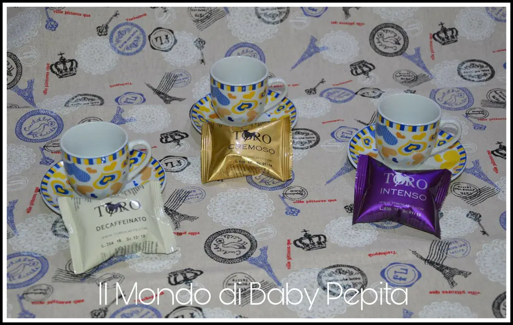
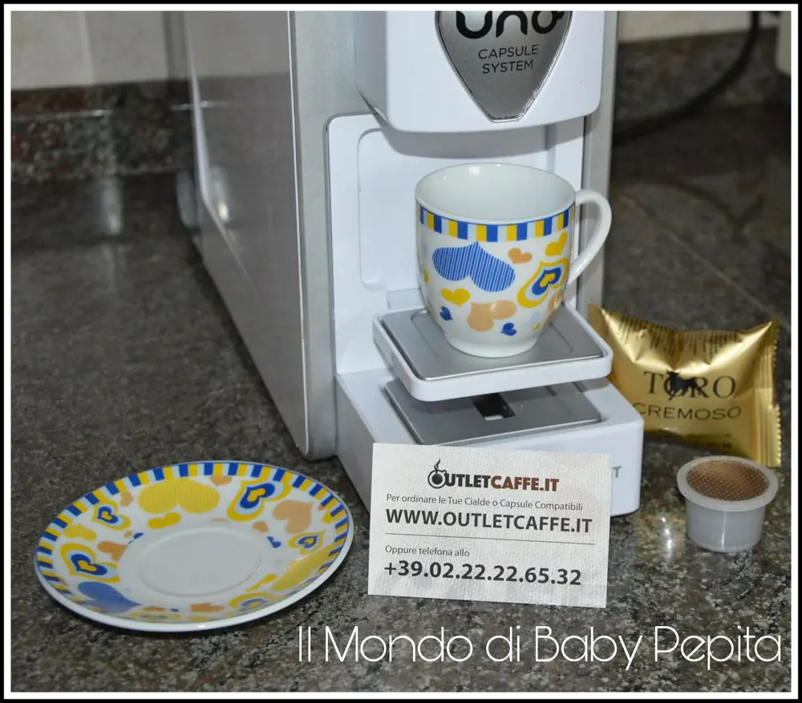
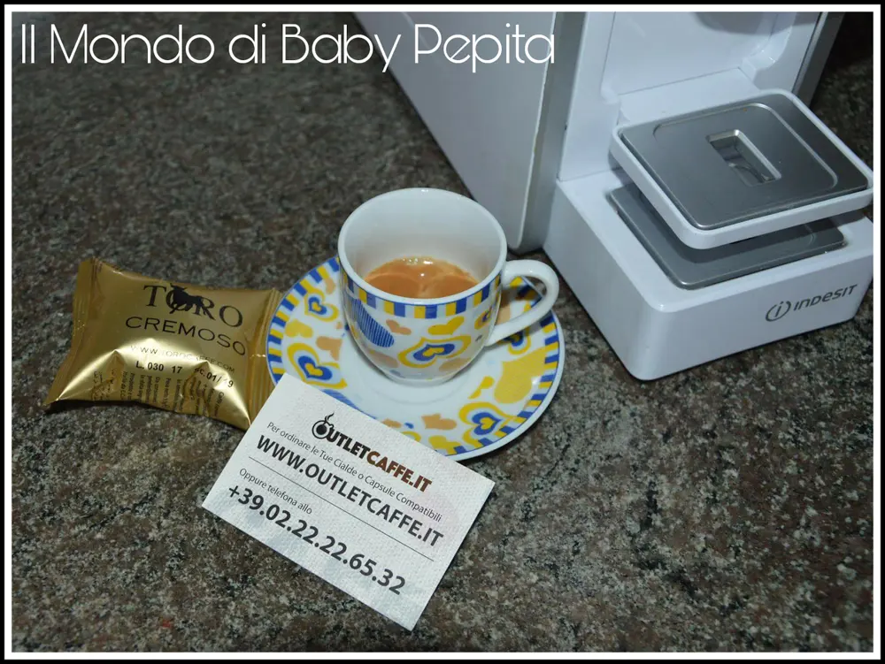
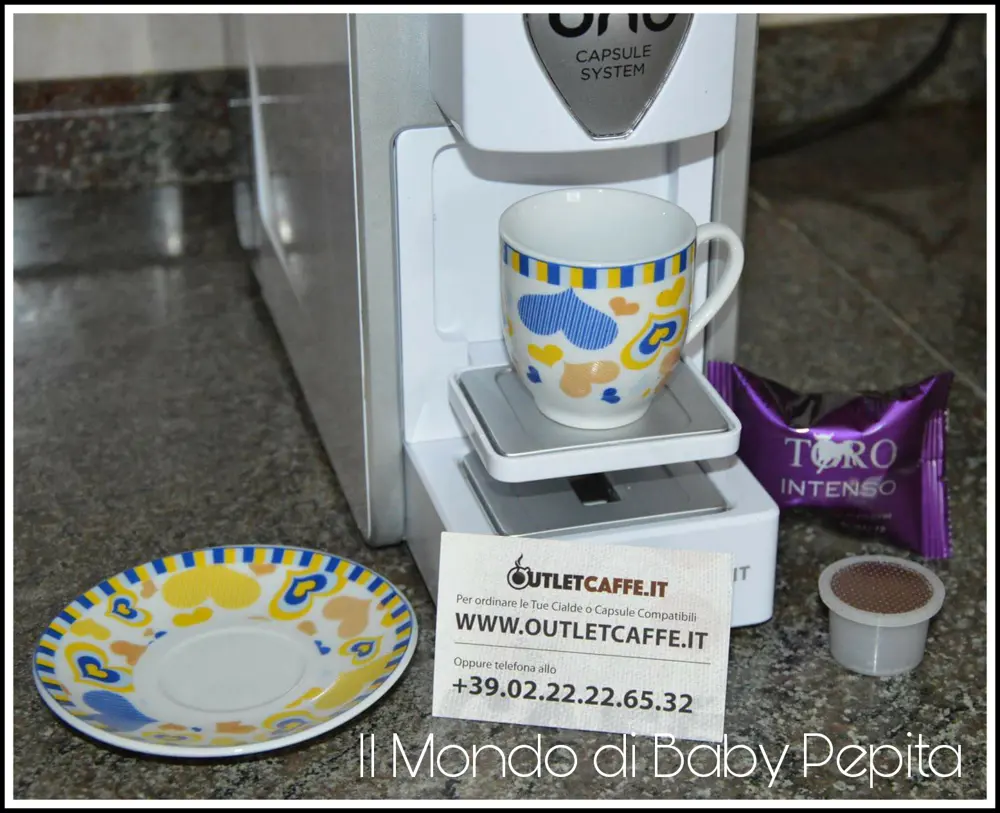
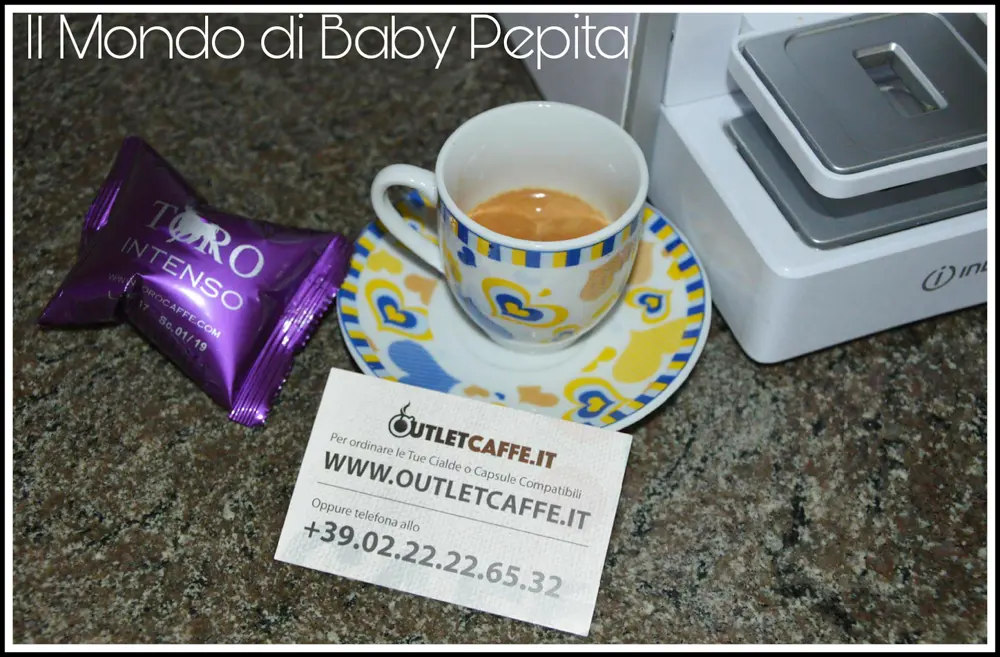
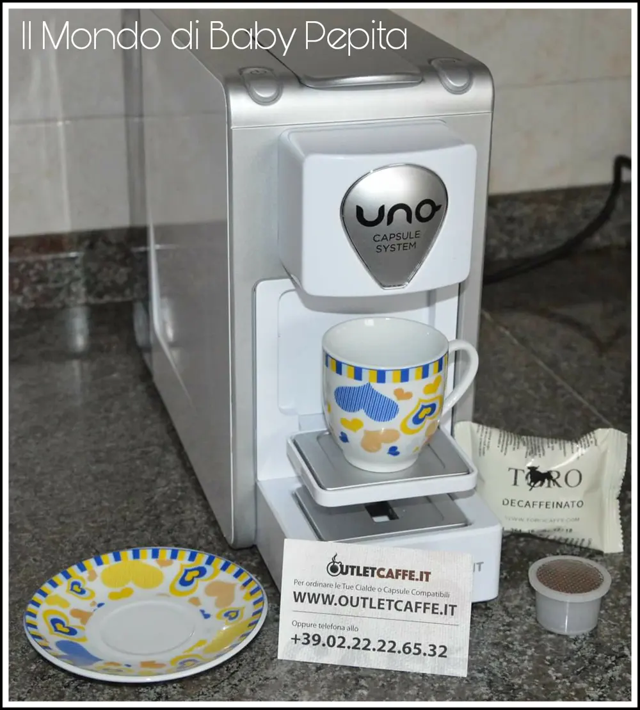
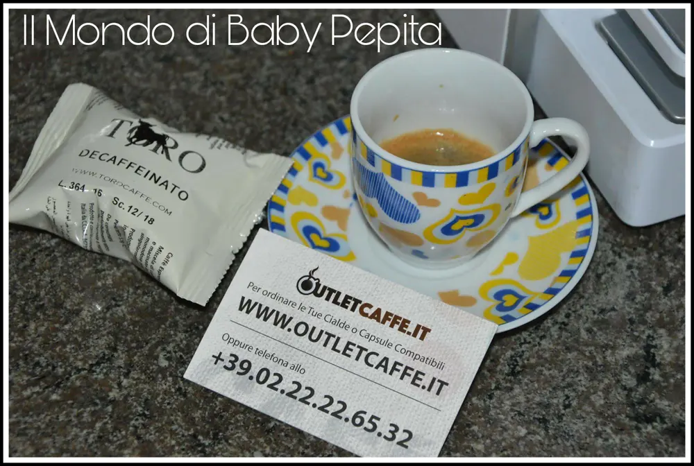
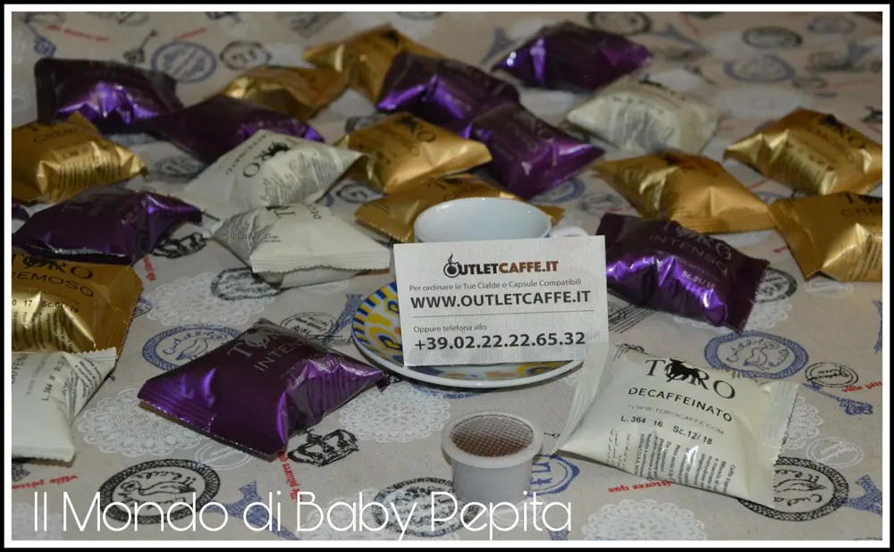

OUTLECAFFE.IT - capsule e cialde

Parliamo oggi di un sito di capsule e cialde ovvero, OUTLETCAFFÈ.IT.
Uno dei siti più visitati che vende le più conosciute cialde e capsule compatibili ed anche originali.
Ad esempio Bialetti, Caffè Borbone, Gimoka, Kimbo, Lavazza, Lollo caffè, Poli caffè, Pop caffè, Ristora, Toro caffè, Vicerè.
Tutte marche conosciute e tutti adatti sia per macchine che accettano cialde che per macchine che accettano capsule.

Tutte le torrefazioni presenti sul sito online Outlet caffè hanno autorizzato l'azienda a vendere e a promuovere i propri caffè in cialde e capsule compatibili con tutti i modelli di macchine.
Lo scopo di Outlet Caffè è quello di rendere disponibili qualità di caffè in cialde e in capsule compatibili con le vostre macchine da caffè anche da parte di torrefazioni artigianali che in altro modo non avreste mai avuto il piacere di conoscere, assaggiare e quindi scoprire.
Il caffè che ho avuto modo di provare per la mia macchina da caffè è il TORO Caffè in capsule.
- Cremoso
- Intenso
- Decaffeinato
Il caffè Toro è un'azienda lombarda che ha iniziato la sua storia vendendo per conto terzi caffè di alta qualità Arabica e Robusta. Oggi produce differenti miscele di caffè in cialde e in capsule compatibili, importando appunto il caffè direttamente dalle migliori piantagioni di caffè arabica dell'Ethiopia.
I prezzi sono accessibili e molto convenienti con spedizione gratuita. Quest'azienda vende anche the.
Tali cialde che ho provato io, sono compatibili con le macchine da caffè - Espresso Cap 74120 N- Espresso Cap 74121- Espresso Cap 74122- Espresso Cap 74402- Espresso Cap 74403- Kimbo UNO System- Hotpoint Ariston Giugiaro

Il caffè Cremoso:
La miscela cremosa è prodotta con 60% Robusta e 40% Arabica, è perfettamente equilibrata e si presenta con una crema straordinaria e un corpo denso e corposo.

Il sapore è davvero ottimo e si sente appunto con un colore scuso e persistente ma con un corpo superiore cremoso che vi farà sentire davvero un caffè di alta qualità.
Il caffè Intenso:

Le capsule compatibili di caffè Intenso contengono un caffè di qualità Robusta.
Ha una miscela intensa e corposa dal colore davvero scuro.

Un sapore davvero intenso di caffè, pieno di miscela per chi ama il caffè denso.

Il caffè Decaffeinato:
La miscela del caffè Decaffeinato è la stessa composizione della qualità del caffè Espresso sempre di Toro compatibili, però totalmente Decaffeinata tramite trattamento ad acqua e completamente naturale.
Il sapore è di una qualità buonissima.
Non è pesante garantendo un vero caffè di buona qualità.

Dunque il mio parere a riguardo è davvero ottimo.
Mi sono fidata di questo sito e ho fatto bene.
Vi consiglio di andare a sbirciare il loro sito e perché no, fare un piccolo acquisto anche per provare brand diversi di caffè di alta qualità a modici prezzi.
Se siete interessati il sito è QUESTO
La loro pagina facebook invece è QUI
